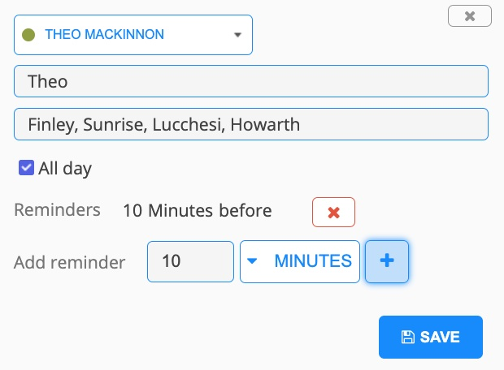

Find the email sent to you from SPLinfo@riseup.net, with the Subject line: 'Pickleball Ladder: Your Calendar LINK'
(Note: Depending on when you are reading this, you may not have received this email yet. If you haven't received it by 09/02/2022 though, please email the Ladder Administrator. If you have already participated in the Ladder, please continue to use your same Calendar link).
Using a computer rather than a phone if possible, open the link in the email to access your unique Availability Calendar. It should have your name showing at the top left.
Click and drag anywhere in the calendar to create 2hr minimum blocks of time that indicate when you are available in the coming week. (Make sure you are working with the correct week)
Please add your first name (or your full name if you share the same first name as someone else in the Ladder) in the Title field of each block you create. (See screenshot below for reference).
If you can only play at certain locations for any particular time-block, specify that in the Location field. Example: "Finley, Howarth, Sunrise". (See screenshot below for reference). If this is left blank, it is assumed that you are flexible and can play anywhere at that time.

Please include a block for the default time of Sunday 12:00 - 2:00 PM if you can make that. This is when you need to be available in order to be guaranteed participation in the ladder that week.
Regardless of whether you can make the default time or not, please mark all the other times you can play! This gives players who cannot make the default time that week a shot at still being able to play. It also makes it much less likely that a majority of groups end up using the default time and that your group is unable to get a court.
I, the Ladder Administrator, will view your Calendar alongside the other participants' Calendars to determine overlapping time windows, and will form groups and notify you (by email) as soon as they are finalized every Monday.
Suggested playing times and locations for each group will be posted on the Groups Calendar. (You are welcome to play at a different time or location to the one suggested, provided you communicate and agree upon it with everyone else in your group).
Here (below) are a few examples of what your finished Calendar might look like each week, as well as what likelihood each example would give you of being able to play.
This player would be guaranteed to play as they are available at the default time (circled in red). They are also helping other players at their Ladder level have a better shot at being able to play by offering numerous other time windows.
The default window is not included, but plenty of other large time windows are provided. If all 4 players in a potential group provide a similar number of similarly sized time windows each week, the chances of there not being any overlapping 2 hour windows would be slim.
The default window is not included, and only 4 time windows are offered, 2 of them being only 2 hours long (circled). Chances of there being any overlapping 2 hour windows are low.
All available times you wish to offer must be added before 9:00 PM every Sunday in order to be considered.
Any time-blocks you create which are shorter than 2 hours in length will be ignored, as will any portion of a time-block which lies between 9:00 PM and 7:00 AM. [Be aware of sunset times if not playing at a floodlit venue!]
Don't bother adding any times on Monday mornings, as it will usually take me until at least midday Monday to finish forming the groups. You are welcome to add afternoon times on Mondays. However, by doing so, you are agreeing to watch carefully for the groups to be posted and potentially play with no more than a few hours' notice. (I will only schedule your match on a Monday afternoon if that is the only overlapping time for your group).
Please email SPLinfo@riseup.net if you have any questions about or problems with your Calendar.
Ladder play does not have to happen at off-peak hours. You are perfectly entitled to play your Ladder matches between 9:00 AM - 9:00 PM at the public courts—i.e. during what is considered "peak time"— when there are cooler temperatures, and less wind. So by all means offer morning times in the scheduling process.
Court capacity at Finley, especially during weekday mornings, is now substantially increased with the addition of 6 more cross-lined courts with high-quality nets available for use. Out of consideration to Open Play players, please bring over one of those temporary nets to the far west cross-lined courts on the tennis side.
At any time, if all courts are full, please note that you must be willing to rotate off between games. And then you can rotate back on (probably within just a few minutes) to the next available court. (Note that tennis players have priority over courts 1 & 2).
The City of Santa Rosa policy is as follows: "Everyone can organize group play, including during the peak hours of 9:00 AM to 12:00 PM, as long as they follow the court rules and rotate off the court after their game is finished. ... Court usage is based on rotating and sharing the courts, not rotating the players. ... [There is a] drop-in open play group [at Finley in the mornings], ... but that does not mean that others have to play with that group during the peak time."